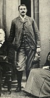
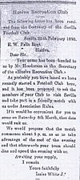

LOS INICIOS DEL FOOTBALL SEVILLANO
La práctica del fútbol fue introducida en Sevilla a finales del siglo XIX por la nutrida colonia británica de la ciudad, compuesta por propietarios o gestores de empresas manufactureras allí radicadas. En el año 1890, aprovechando la tradición de la Noche de Burns, que se celebra cada 25 de enero, un grupo de británicos y españoles decidió fundar un club que cumpliese las reglas de la Football Association, al llevar el nombre de la ciudad en la que radicaban los fundadores (Sevilla),
al indicar que el club practicará el football y no el rugby (Football Club) y al haber quedado los principales cargos del club consensuados y elegidos en la misma reunión.

El primer presidente del Sevilla Football Club fue Edward Farquharson Johnston, el vice-cónsul británico en la ciudad; el primer secretario fue Isaías White Méndez,
sevillano radicado en la calle Bailén, n.º 41 (primera sede social y administrativa del club) y el primer capitán del club fue Hugo MacColl, un comerciante escocés,
quien además de ejercer las labores propias de capitán, tuvo provisto al Sevilla Football Club de balones y camisetas en sus comienzos, a través de la naviera MacAndrews.
Después de debatirlo y tomar unas cuantas cañas de cerveza, el “Club de ‘Football’ de Sevilla” estaba debidamente constituido y con sus cargos oficiales electos.
Se decidió que deberíamos jugar conforme a las reglas de la Asociación.
Pasado un mes de la fundación del club, el secretario Isaías White invitó mediante carta escrita al secretario del Huelva Recreation Club, Edward William Palin,
a disputar un encuentro de football en Sevilla. El partido se jugó el día 8 de marzo de 1890 en la Sociedad de Carreras de Caballos (Dehesa de Tablada) a las 16:45 horas,
siendo éste el primer partido oficial disputado en España, al ser el primero disputado por dos equipos debidamente constituidos.
El partido lo arbitró el Sr. Johnston y concluyó con una victoria sevillista por 2 goles a 0, con goles de Ritson y el "payaso" Yugles.
Presenciaron el partido unas 150 personas y se jugó con un tiempo lluvioso.
El Sevilla Football Club siguió jugando al fútbol en los años siguientes con equipos formados por ingleses, alemanes y españoles,
y paulatinamente el club fue tomando una tendencia al aumento de los españoles entre las filas sevillistas, frente a la disminución de extranjeros.
Fue especialmente sonora la incorporación en 1896 de Luis Moliní, un ingeniero que fue trasladado a Sevilla para trabajar en el puerto y que había recalado en las filas
del Sevilla Football Club después de haber estado el Huelva Recreation Club.
Con la entrada del nuevo siglo XX llegó el relevo generacional y la vida de club continuó tanto en lo deportivo como en lo social, jugando partidos en los alrededores de la fábrica
de la Trinidad y apoyado por el Club Mercantil e Industrial de Sevilla. Mientras tanto, en España se empezó a gestar la idea de formar un federación inter-clubes, y en 1902 la prensa deportiva
madrileña y catalana (Como la revista "Los Deportes") hablaron del Sevilla Football Club como un club imprescindible en ese intento de federación.
En 1902, el Real Madrid convocó a todos los equipos españoles para jugar un torneo en honor a la mayoría de edad de Alfonso XIIIl y su jura como Rey de España,
llamado Copa de la Coronación (precursor de la Copa de España, actual Copa del Rey), dictaminando que los equipos que participasen en ella tenían que estar debidamente inscritos en el registro de asociaciones.
Esto provocó que se fundasen nuevos clubes y que los que ya existían se animasen a inscribirse. Al igual que el Sevilla Football Club,
equipos como el Football Club Barcelona o el Huelva Recreation Club se vieron en la necesidad de redactar unos primeros estatutos del club para su posterior inscripción.
El club catalán fue fundado en 1899, sus primeros estatutos fueron redactados en 1902 y se registran en 1903. Los onubenses tienen su origen en 1889, y redactaron sus estatutos y se inscribieron el mismo año,
1903. El Sevilla, por su parte, se fundó en 1890, redactó sus primeros estatutos en 1904 y fue inscrito en 1905.
